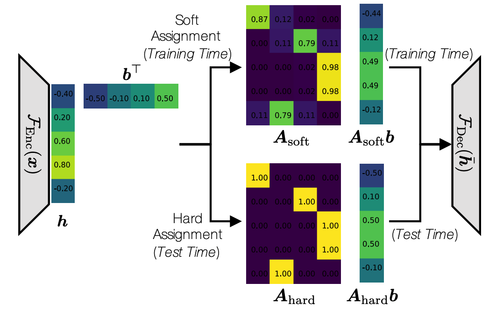
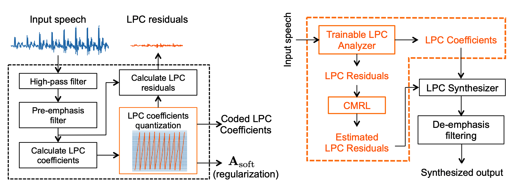

Data-driven approaches these days tend to get rid of the feature engineering step at the cost of model complexity.
In speech coding, they are usually termed as "end-to-end" neural codecs which models the speech production process from scratch in the time domain.
However, model complexity matters as much as the performance as these codecs operate on low-power devices! I don't want to drain the battery of my smart agent after it decodes a verse of killing me softly...
One trick is to outsource the response of the vocal tract to linear predictive coding (LPC), a conventional but efficient DSP technique to estimate the spectral envelope of the speech signal.
That said, the DNN is only used to quantize the LPC residual. This, of course, is not the end of the story as the residual is rather soft and noisy comparing to the raw waveform, and consequently very hard to be coded with a lightweight network.
Collaborative quantization addresses this issue by making the LPC analyzer a trainable module which can be optimized along with the other deep neural networks.
Long story short, it finds a better pivot to allocate bits to digitalize LPC coefficients and quantize the corresponding LPC residuals.

Fig 1. A trainable soft-to-hard quantization scheme used in the digitalization of LPC coefficients and residuals.

Fig 2. The trainable LPC analyzer (left) and the overview of the CQ system (right). Blocks in the orange color are TensorFlow compatiable.
Decoded Samples
The bitrate for the uncompressed reference signal is 256 kbps.
Bitrate
Reference
AMR-WB
Opus
LPC-CMRL (previous version)
CQ (newly proposed)
~9 kbps
~9 kbps
~24 kbps
~24 kbps
Quick QAs
Q: Is it similar to LPCNet?
A: Both LPCNet and CQ are the combination of LPC and DNN. LPCNet is a vocoder operating at even lower bitrates, while CQ is a waveform codec covering a wider range of bitrates and can scale up to transparent quality.
Q: Wait... Do you have to drag every problem down to DNN?
A: I know it's less inspiring these days, and that conventional codecs function just fine. But many of those codecs are protected by patents which means you don't have the ownership of the intellectual property if your product is built on top of them. Besides, they are deterministic DSP models, not able to be optimized with other downstream applications such as speech enhancement and recognition, etc. Neural codecs can be placed in the line of products to facilitate those applications when optimized integratedly.
Q: What's the limit of CQ?
A: The decoder is still much more complicated than the conventional DSP based codec.